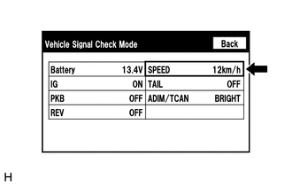
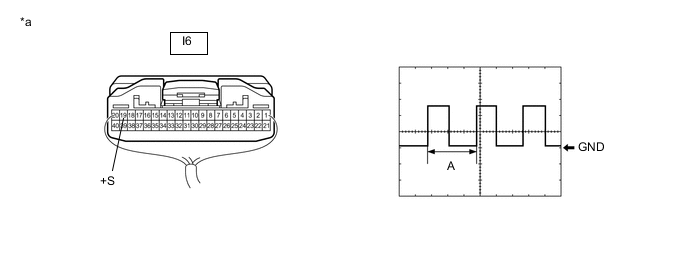
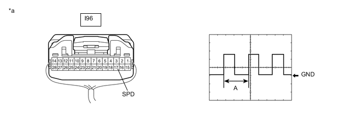

AUDIO AND VISUAL SYSTEM Vehicle Speed Signal Circuit between Radio Receiver and Combination Meter
DESCRIPTION
-
This circuit is necessary for the Automatic Sound Levelizer (ASL) built into the radio and display receiver assembly.
The Automatic Sound Levelizer (ASL) function automatically adjusts the audio system volume level in order to compensate for increased vehicle noise (vehicle noise tends to increase as vehicle speed increases). The ASL adjusts the volume level based on vehicle speed signals sent from the meter circuit plate.
for Automatic Sound Levelizer (ASL):
-
Vehicle speed signals are sent from the meter circuit plate and used to cancel "Bluetooth" function operation.
The radio and display receiver assembly recognizes that the vehicle is being driven and makes it impossible to connect or register a "Bluetooth" device while driving.
for "Bluetooth":
-
The radio and display receiver assembly receives a vehicle speed signal from the meter circuit plate for DVD viewing restriction while driving, etc.
for Digital Versatile Disc (DVD):
Tech Tips
-
A voltage of 12 V or 5 V is output from each ECU and then input to the meter circuit plate. The signal is changed to a pulse signal at the transistor in the meter circuit plate. Each ECU controls its respective system based on this pulse signal.
-
If a short occurs in any of the ECUs or in the wire harness connected to an ECU, all systems in the following diagram will not operate normally.
WIRING DIAGRAM

PROCEDURE
-
CHECK VEHICLE SIGNAL (OPERATION CHECK)
-

Enter the "Vehicle Signal Check Mode" screen. Refer to Check Vehicle Signal Check Mode in Operation Check.
-
While driving the vehicle, compare the value of "SPEED" to the reading on the speedometer. Check if these readings are almost equal.
Tech Tips
The meter circuit plate receives the vehicle speed signal from the skid control ECU via CAN communication. Therefore, perform the following inspection referring to values in the Data List of the skid control ECU because it is the source of the vehicle speed signal.
OK Vehicle speed displayed on the "Vehicle Signal Check Mode" screen is almost the same as the actual vehicle speed measured using the GTS. Click here Click here Result Proceed to OK NG
OK 
PROCEED TO NEXT SUSPECTED AREA SHOWN IN PROBLEM SYMPTOMS TABLE Click here
NG 
-
-
INSPECT METER CIRCUIT PLATE (OUTPUT WAVEFORM)
-
Check the output waveform.

*a Component with harness connected
(Meter Circuit Plate)
- -
-
Remove the meter circuit plate with the connector still connected.
-
Connect an oscilloscope to terminal I6-19 (+S) and body ground.
-
Turn the power switch on (IG).
-
Turn a wheel slowly.
-
Check the signal waveform according to the condition(s) in the table below.
Item Condition Measurement terminal I6-19 (+S) - Body ground Tool setting 5 V/DIV., 20 ms./DIV. Vehicle condition Wheel being rotated OK The waveform is similar to that shown in the illustration. Tech Tips
When the system is functioning normally, one wheel revolution generates 4 pulses. As the vehicle speed increases, the width indicated by (A) in the illustration narrows.
Result Proceed to OK NG -
NG
GO TO METER / GAUGE SYSTEM Click here
OK
-
-
INSPECT RADIO AND DISPLAY RECEIVER ASSEMBLY (INPUT WAVEFORM)
-
Check the input waveform.

*a Component with harness connected
(Radio and Display Receiver Assembly)
- -
-
Remove the radio and display receiver assembly with the connector still connected.
-
Connect an oscilloscope to terminal I96-17 (SPD) and body ground.
-
Turn the power switch on (IG).
-
Turn a wheel slowly.
-
Check the signal waveform according to the condition(s) in the table below.
Item Condition Measurement terminal I96-17 (SPD) - Body ground Tool setting 5 V/DIV., 20 ms./DIV. Vehicle condition Wheel being rotated OK The waveform is similar to that shown in the illustration. Tech Tips
When the system is functioning normally, one wheel revolution generates 4 pulses. As the vehicle speed increases, the width indicated by (A) in the illustration narrows.
Result Proceed to OK NG -
OK
REPLACE RADIO AND DISPLAY RECEIVER ASSEMBLY Click here
NG
REPAIR OR REPLACE HARNESS OR CONNECTOR
-